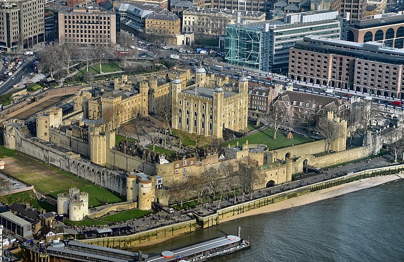
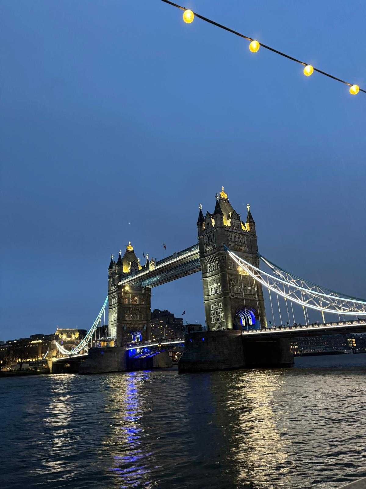
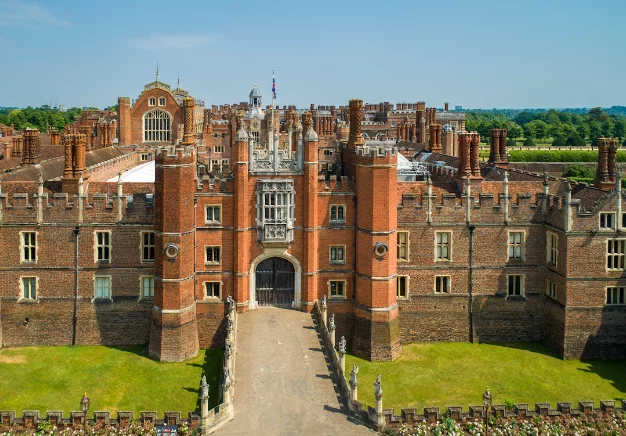
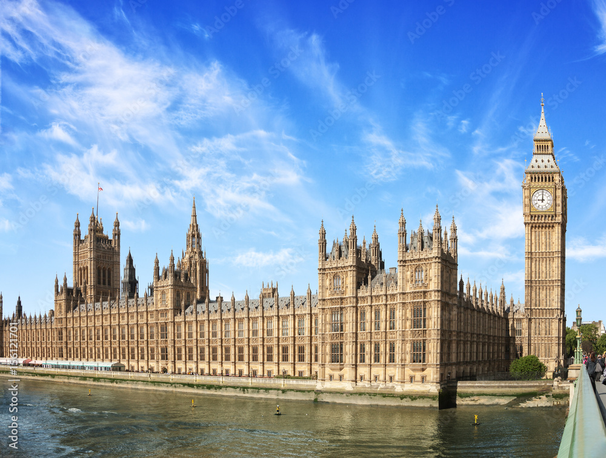
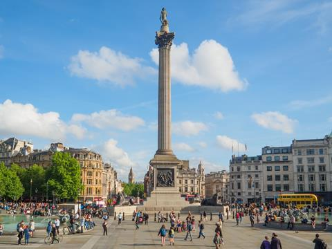
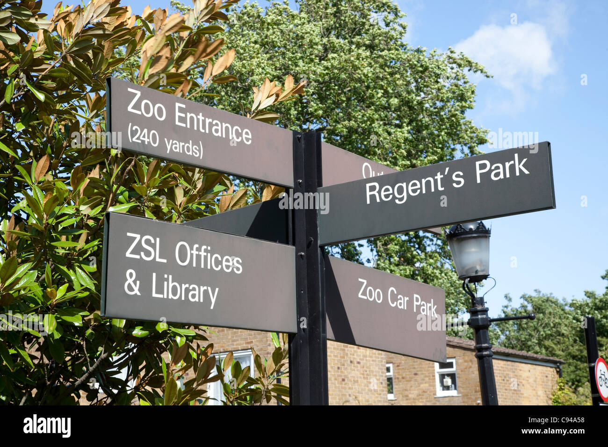
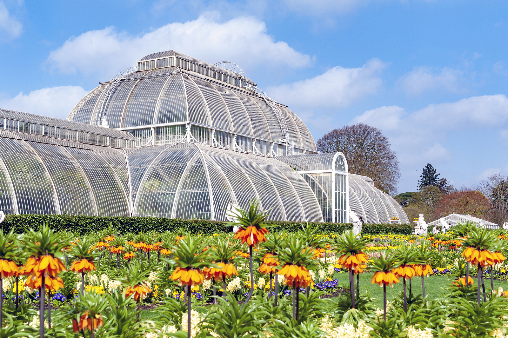

Turistik Yerler
- Buckingham Sarayı
- Tower of London 
- Tower Bridge 

İngiliz Kraliyet ailesinin ikametgah yeri olmasının yanı sıra Buckingham Sarayı turistik öneme sahip ünlü yapılardan biridir. İngiliz yönetiminin merkezi ve resmi tören ve etkinliklerin düzenlendiği bir yerdir. 1837 yılından itibaren kraliyet ailesinin resmi ikamet ettiği yer olmuştur. Saray neo-klasik tarzda yapılmıştır. Buraya gidenlerin ilgisini çeken en önemli şeylerden birisi de askerlerin nöbet değişimidir(Changing the Guard). Askerler sadece nöbet değişimi sırasında hareket ederler. Ayrıca yaz aylarında sarayın bazı bölümleri ziyarete açılır.
1078 yılında 1.William tarafından yaptırılan Beyaz Kule Thames Nehri'nin kuzey kıyısında bulunur. En başta şehri korumak için yapılan bu kulenin zamanla etrafına eklemeler yapılmıştır. Eklenen bölümler ile kule idam ve işkence merkezi, cephanelik, devlet hazinesi, hayvanat bahçesi, darphane ve gözlemevi olarak da hizmet vermiştir. Yapıldığı günden itibaren kulenin yönetim ve korunması şehriden ayrı yapılmıştır. 1988 yılında ise bu kule UNESCO tarafından Dünya Mirası listesine eklenmiştir.
1886 yılında inşasına başlanan köprü Thames Nehri üzerinde yer alır ve şehrin iki yanını birbirine bağlar. Köprü açılır kapanır olarak inşa edilmişitir. İki yürüyüş yolu ve bir araba yoluyla birbirine bağlanan iki kuleden oluşur. Kule gotik bir mimariye sahiptir. Kuleden merdivenlerle köprüye çıkıp içindeki sergiyi gezebilir ve makine odalarını görebilirsiniz. Ayrıca köprünün cam tabanından aşağıya bakabilir veya köprüden doğu ve batı tarafı olarak Londra manzarasını izleyebilirisiniz.
Tarihi Yerler
- Hampton Court Sarayı 
- Big Ben ve Westminster Sarayı 
- Trafalgar Meydanı ve Nelson Anıtı 
1838 yılından beri halka açık olan bir kraliyet sarayıdır. 8. Henry döneminden kalmıştır. Ziyaretçilere kraliyet hayatını deneyimleme ve İngiliz tarhini tekrardan tanıma imkanı sunar. Sarayda gösterişli odaları, dünyaca ünlü labirenti, 8. Henry'nin apartmanları, Anne Boleyn'in hayaletinin dolaştığı iddia edilen kordidorları, sarayın mutfaklarını ve saray bahçelerini gezebilirsiniz. Saray bahçeleri dönemin bahçe sanatlarının bir örneğidir ve mevsimlere göre değişir.
Westminster Sarayı İngiliz Parlementosuna ev sahipliği yapan bir yapıdır. 1100 odadan oluşan saray hala parlemento binası olarak kullanılmaktadır. 1837 yılında UNESCO Dünya Mirası olarak ilan edilmiştir.
Sarayın yanındaki dünyanın en büyük ikinci dört yüzlü saati Big Ben 96 metre yüksekliğindedir. Aslında Big Ben saat kulesinin çanının adıdır, resmi adı Elizabeth Kulesi'dir fakat zamanla halk tüm yapıyı belirtmek için Big Ben adını kullanmıştır. Kuledeki saat 5.5 ton ağırlığındadır ve çaldığında 14 kilometre uzaktan duyulabilir. İngilizlerin tüm dünyada kültürel simgesi olan bu yapı 1987'den beri UNESCO Dünya Mirası Sit Alanı'nın bir parçasıdır.
Adını İngiliz donanmasının Fransız ve İspanyol donanmalarını yendiği Trafalgar Deniz Savaşı'ndan alır. Meydan bugünkü haline 1845 yılında ulaşmıştır. 1845 yılına kadar uzun yıllar boyunca hükümdarların atlarının ahıl ve eğitim alanı olarak kullanılmıştır. Meydana çevrilmesinden sonra çevresindeki boşalan alan National Gallery'e çevrilmiştir. Ayrıca bu meydan önemli zamanlarda kutlama ve etkinliklerin merkezi olmuştur.
Koramiral Horatio Nelson'ın Trafalgar Savaşı'nda kazandığı ve Fransız keskin nişancı tarafından öldürüldüğü zaferi anmak için yapılmıştır. 1838'de bir grup tarafından bu anıtı dikmek için finanse edilen komite kurulmuştur. Tasarımlar için ise bir yarışma düzenlenmiş ve en beğenilen tasarım seçilmiştir. Komiteye yapılan bağışlar ile anıtın yapımına başlanmış ve 1843 yılında yapımı tamamlanmıştır.
Doğal Alanlar
- Hyde Park
- Regent's Park 
- Richmond Park
- Kew Gardens (Kraliyet Botanik Bahçeleri) 
Kraliyet Parkı olarak bilinen 350 dönümlük bu yer Londra'nın en ünlü parkıdır. Burada bisiklet sürebilir, parkın içinde bulunan gölde kayık turu yapabilir, yürüyüş yapabilir veya piknik yapabilirsiniz.
410 dönüme sahip bu alanda çiçek bahçeleri, spor aktiviteleri yapabileceğiniz yeşil alanlar bulunur ve Londra Hayvanat Bahçesi'ne ev sahipliği yapar. Hayvanat bahçesi dünyanın en eski bilimsel hayvanat bahçelerinden biridir ve 750 farklı tür bulunur. Yaz aylarında parkın içindeki açık hava tiyatrosunda gerçekleşen tiyatro, müzikal ve konserlere katılabilirsiniz. Parkın yanında bulunan Primrose Hill'e çıkarak Londra'ya kuş bakışı bakabilirsiniz.
17. yüzyılda 1. Charles tarafından geyik parkı olarak kurulan park 2115 dönümlük alanı ile en büyük Kraliyet Parkıdır. Parkın içinde bir çok köşk, anıt ve spor alanları bulunur. Golf, at binme, ragbi ve koşu sporları yapılabilir. Yaban hayatının korunması amacıyla ulusal ve uluslararası öneme sahip bir yerdir.
Dünya'nın en ünlü botanik bahçelerinden biridir. 1759 yılında kurulmuştur ve UNESCO Dünya Mirası listesinde bulunur. Gezilecek farklı türde inşa edilmiş binalar ve yürüyüş yolları bulunur. Ayrıca burada geçici sergiler, seminerler ve çocuk etkinlikleri düzenlenir. Kew Explorer treni ile bahçenin her tarafını dolaşabilirsiniz.